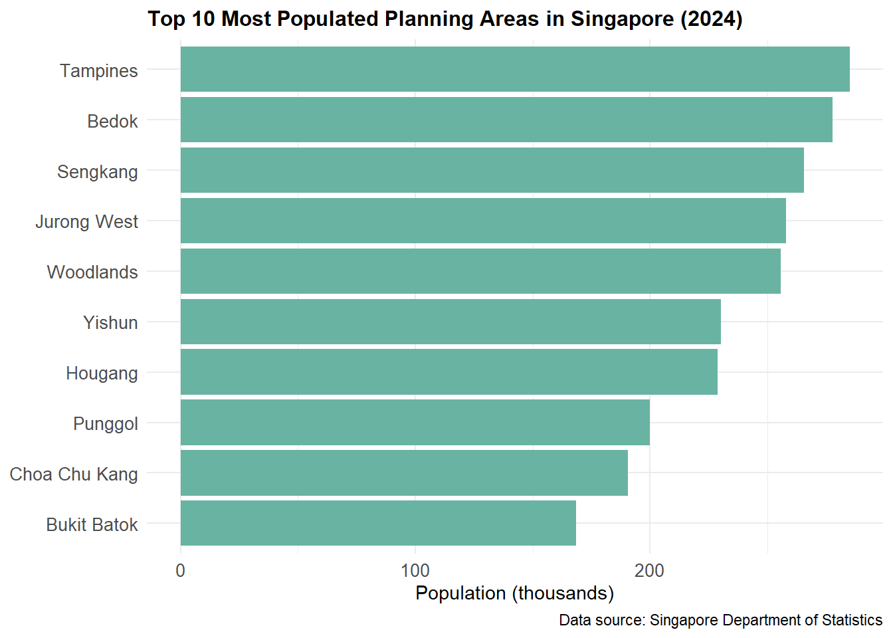
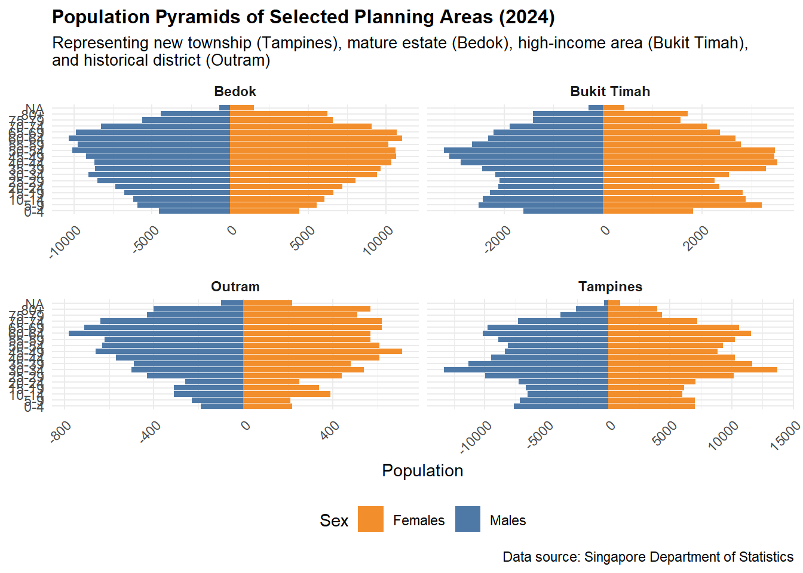
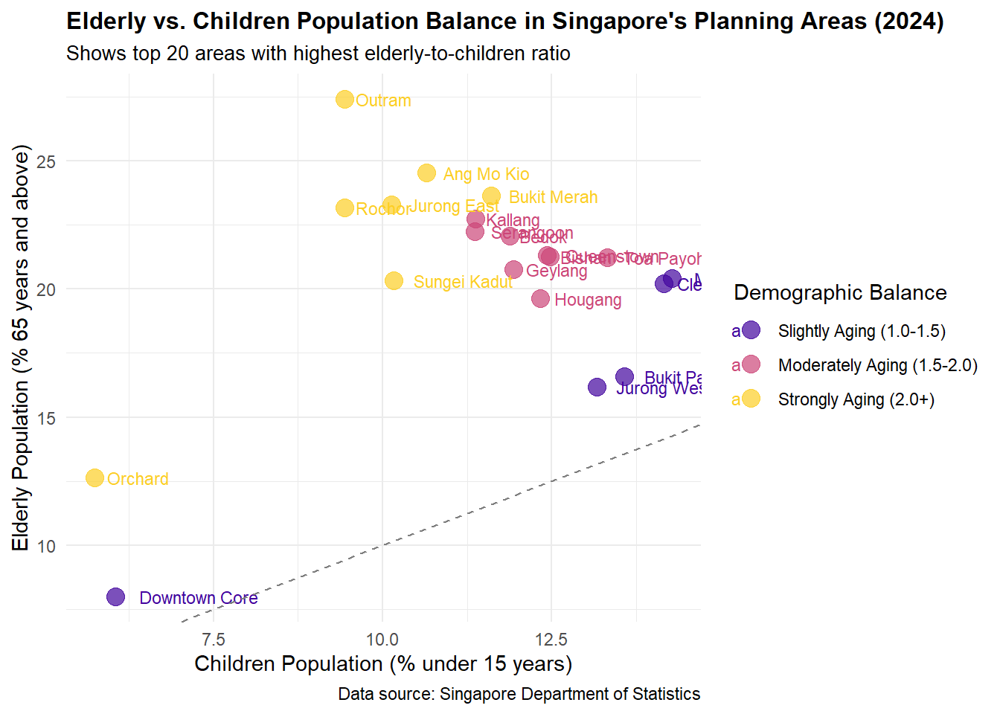
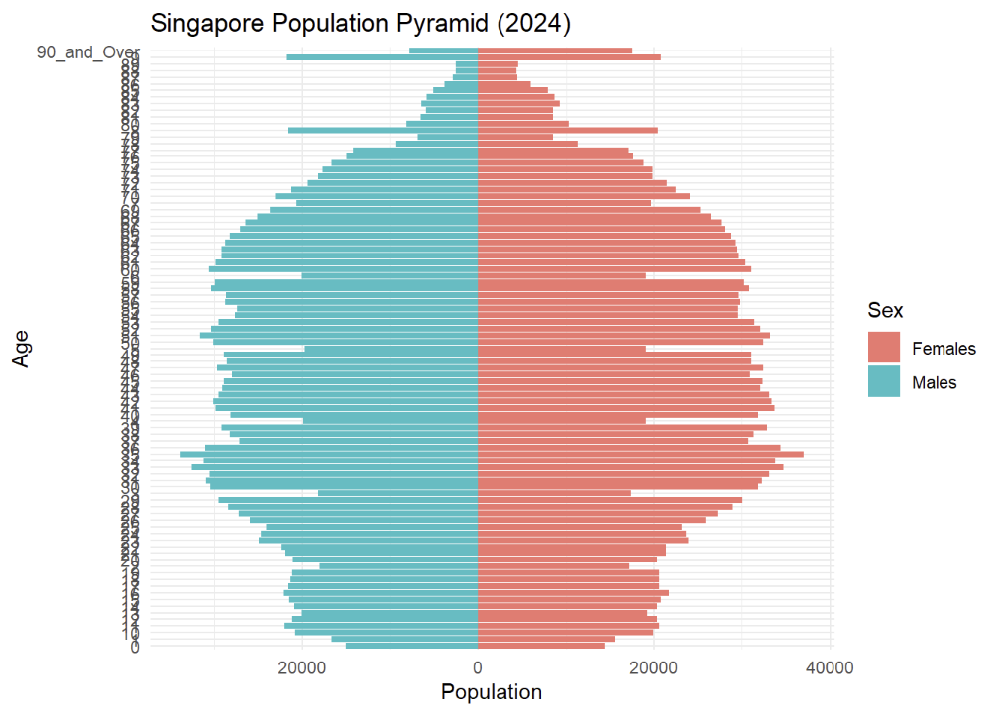

This project visualizes Singapore’s demographic structure and distribution in 2024, based on data from the Department of Statistics. The analysis focuses on population distribution across planning areas, age structures, and demographic patterns that reveal Singapore’s urban development and population characteristics.
Planning Area Population Distribution
# Create planning area population bar charttop_10_pa <- pa_summary %>%top_n(10, Total_Pop)ggplot(top_10_pa, aes(x =reorder(PA, Total_Pop), y = Total_Pop/1000)) +geom_bar(stat ="identity", fill ="#69b3a2") +coord_flip() +labs(title ="Top 10 Most Populated Planning Areas in Singapore (2024)",x =NULL,y ="Population (thousands)",caption ="Data source: Singapore Department of Statistics" ) +theme_minimal() +theme(plot.title =element_text(face ="bold", size =12),axis.text =element_text(size =10) )

Singapore’s population is heavily concentrated in a few key planning areas, with Tampines and Bedok housing the largest populations. This pattern reflects decades of urban development policy focused on creating high-density residential hubs in the east and northeast regions, connected by efficient transportation networks. These areas serve as complete townships with integrated amenities, explaining their sustained popularity despite newer developments elsewhere.
Age Structure Comparison Across Planning Areas
# Select representative planning areas for population pyramidsselected_areas <-c("Tampines", "Bedok", "Bukit Timah", "Outram")# Prepare population pyramid datapyramid_data <- age_bins %>%filter(PA %in% selected_areas) %>%group_by(PA, Age_Group, Sex) %>%summarise(Pop =sum(Pop)) %>%mutate(Pop =ifelse(Sex =="Males", -Pop, Pop),Age_Group =factor(Age_Group, levels =c("0-4", "5-9", "10-14", "15-19", "20-24", "25-29", "30-34", "35-39", "40-44", "45-49", "50-54", "55-59", "60-64", "65-69", "70-74", "75-79", "80+")) )# Create population pyramidsggplot(pyramid_data, aes(x = Age_Group, y = Pop, fill = Sex)) +geom_bar(stat ="identity") +coord_flip() +facet_wrap(~ PA, scales ="free_x") +scale_fill_manual(values =c("Males"="#4E79A7", "Females"="#F28E2B")) +labs(title ="Population Pyramids of Selected Planning Areas (2024)",subtitle ="Representing new township (Tampines), mature estate (Bedok), high-income area (Bukit Timah),\nand historical district (Outram)",x =NULL,y ="Population",caption ="Data source: Singapore Department of Statistics" ) +theme_minimal() +theme(legend.position ="bottom",axis.text.x =element_text(angle =45, hjust =1),strip.text =element_text(face ="bold"),plot.title =element_text(face ="bold", size =12),plot.subtitle =element_text(size =10) )

The population pyramids reveal distinct demographic profiles across four strategically selected planning areas. Tampines, representing newer townships, shows a balanced structure with substantial working-age population. Mature estates like Bedok display aging populations with wider tops, reflecting original residents who have aged in place. Bukit Timah, a high-income private housing area, exhibits a unique “sandglass” pattern with fewer young adults, while Outram’s pyramid demonstrates a significant elderly population characteristic of Singapore’s historical urban core.
Demographic Balance: Elderly vs. Children Distribution
# Combine elderly and children datademographic_balance <- elderly_ratio %>%select(PA, Elderly_Ratio) %>%left_join( children_ratio %>%select(PA, Child_Ratio),by ="PA" ) %>%mutate(Demographic_Ratio = Elderly_Ratio / Child_Ratio,Balance_Category =case_when( Demographic_Ratio >=2.0~"Strongly Aging (2.0+)", Demographic_Ratio >=1.5~"Moderately Aging (1.5-2.0)", Demographic_Ratio >=1.0~"Slightly Aging (1.0-1.5)", Demographic_Ratio >=0.67~"Balanced (0.67-1.0)",TRUE~"Youth-dominant (<0.67)" ),Balance_Category =factor(Balance_Category, levels =c("Youth-dominant (<0.67)", "Balanced (0.67-1.0)", "Slightly Aging (1.0-1.5)", "Moderately Aging (1.5-2.0)", "Strongly Aging (2.0+)")) ) %>%arrange(desc(Demographic_Ratio))# Select top 20 areas for analysistop_20_balance <- demographic_balance %>%head(20)# Create scatter plotggplot(top_20_balance, aes(x = Child_Ratio, y = Elderly_Ratio, color = Balance_Category)) +geom_point(size =4, alpha =0.7) +geom_text(aes(label = PA), hjust =-0.2, vjust =0.5, size =3) +geom_abline(slope =1, linetype ="dashed", color ="gray50") +scale_color_viridis_d(option ="plasma", begin =0.1, end =0.9) +labs(title ="Elderly vs. Children Population Balance in Singapore's Planning Areas (2024)",subtitle ="Shows top 20 areas with highest elderly-to-children ratio",x ="Children Population (% under 15 years)",y ="Elderly Population (% 65 years and above)",color ="Demographic Balance",caption ="Data source: Singapore Department of Statistics" ) +theme_minimal() +theme(legend.position ="right",plot.title =element_text(face ="bold", size =12),plot.subtitle =element_text(size =10) )

This innovative visualization reveals Singapore’s demographic transition by comparing elderly and children populations across planning areas. Areas above the diagonal line have more elderly than children, with Outram and Bukit Merah showing extreme imbalances (over 3:1 ratio). This pattern reflects Singapore’s rapid aging, particularly in first-generation public housing estates where infrastructure designed for families now serves an elderly majority. These imbalances create challenges for social services, healthcare accessibility, and school planning, requiring targeted policy responses to address these distinct neighborhood-level demographic profiles.
Conclusion
The visualizations reveal Singapore’s complex demographic landscape in 2024, characterized by distinct spatial patterns in population distribution and age structure. Established planning areas in the east remain heavily populated, while pronounced demographic differences exist between mature and newer estates. These patterns have significant implications for urban planning priorities including: (1) targeted healthcare infrastructure development in aging neighborhoods like Outram and Bukit Merah; (2) transit connectivity improvements to address population concentration in eastern regions; and (3) housing policy adaptations to accommodate evolving household structures across different planning areas.
Peer Review – Take-home Exercise 1 (Rajesh)
Original visualisation

Original chart by Rajesh
Strengths
Clear narrative – three charts move logically from overall age structure to spatial distribution and gender ratio.
Chart–data fit – population pyramid, ranked bar chart and gender-ratio plot suit their respective messages.
Self-contained labels – titles, subtitles and axes allow non-experts to grasp each visual quickly.
Areas for improvement
Colour consistency – each chart uses a different palette, breaking visual unity.
Crowded pyramid labels – annual age ticks overlap; grouping by five-year bands would improve readability.
Gender-ratio baseline – adding a reference line at M∕F = 1 lets readers spot imbalanced areas instantly.
Make-over (gender-ratio chart)
library(tidyverse)library(ggthemes)gender_plot <- demographic_balance %>%ggplot(aes(x =reorder(PA, Demographic_Ratio), y = Demographic_Ratio, fill = Demographic_Ratio >1)) +geom_col(show.legend =FALSE) +geom_hline(yintercept =1, linetype ="dashed") +scale_fill_manual(values =c("#4E79A7", "#E15759")) +labs(title ="Gender ratio by planning area (M/F)", subtitle ="Bars above the dashed line indicate more males than females", x =NULL, y ="Male : Female") +coord_flip() +theme_economist() +theme(axis.text.y =element_text(size =7),plot.margin =margin(t =5, r =5, b =5, l =20, unit ="pt"),text =element_text(size =9) )gender_plot